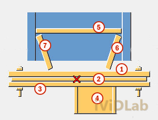
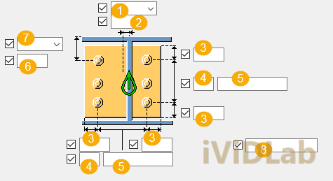

Giải pháp chân cột đặc biệt: Chân cột hộp rỗng (1066) & Cột biến đổi tiết diện (1068)Special Column Bases: Hollow Section Column Base Plate (1066) & Tapered Column Base Plate (1068)
Chuyên mục: Tekla StructuresCategory: Tekla Structures•Ngày đăng: 24/05/2026Published: May 24, 2026•Tác giả: iViDLab TeamAuthor: iViDLab Team
Trong thực tế thiết kế kết cấu thép, không phải lúc nào các kỹ sư cũng sử dụng tiết diện chữ I hoặc H chuẩn. Khung Zamil, các công trình đặc thù thường sử dụng tiết diện cột vát (tapered column) hoặc cột hộp rỗng (hollow section). Để mô hình hóa chính xác những tiết diện này trong Tekla Structures, Component 1066 (Hollow Section Base Plate) và 1068 (Tapered Column Base Plate) là những công cụ không thể thay thế.
Dựa trên tài liệu hệ thống của Tekla TS_COMP_2025_en_System components.pdf, iViDLab Team xin giới thiệu chi tiết cách vận dụng hai loại liên kết này một cách hiệu quả nhất.
1. Cột biến đổi tiết diện (Tapered Column) - Component 1068
Liên kết 1068 được thiết kế riêng cho các cấu kiện cột có cánh hoặc bụng thay đổi kích thước theo chiều dọc. Hệ thống sườn gia cường sẽ tự động bắt theo độ nghiêng của cánh cột, một tính năng mà các component thông thường không hỗ trợ tốt.
Mẹo chuyên gia: Đảm bảo rằng cấu kiện cột của bạn được định nghĩa đúng thuộc tính tiết diện biến đổi (parametric profile) trước khi áp dụng component 1068 để hệ thống tự động nhận diện góc nghiêng.
2. Cột hộp rỗng (Hollow Section) - Component 1066
Đối với cột hộp rỗng chữ nhật hoặc vuông, component 1066 giúp bố trí sườn gia cường bao quanh chu vi ngoài hoặc ẩn bên trong lòng cột nếu tiết diện đủ lớn. Chú ý khai báo lỗ thoát nước/thi công (drain/vent holes) trên bản đế nếu cột được đổ bê tông bên trong hoặc cần mạ kẽm nhúng nóng.

Cấu hình cột hộp rỗng

Gia cường cột biến đổi tiết diện
In structural steel design practice, standard I or H sections are not always the default choice. Portal frames and specialized structures frequently employ tapered columns or hollow sections. To accurately model these in Tekla Structures, Component 1066 (Hollow Section Base Plate) and 1068 (Tapered Column Base Plate) are indispensable tools.
Based on Tekla's system documentation TS_COMP_2025_en_System components.pdf, the iViDLab Team provides a detailed guide on how to utilize these connections most effectively.
1. Tapered Column Base Plate - Component 1068
Component 1068 is exclusively designed for column members with varying flange or web dimensions along their length. The stiffener system automatically adapts to the inclination of the column flange, a feature not well-supported by standard base plate components.
Pro Tip: Ensure your column member is correctly defined with a parametric profile attribute before applying component 1068, so the system automatically recognizes the taper angle.
2. Hollow Section Base Plate - Component 1066
For rectangular or square hollow columns, component 1066 assists in arranging stiffeners around the outer perimeter or hidden inside the column if the section is large enough. Pay attention to defining drain/vent holes on the base plate if the column is concrete-filled or requires hot-dip galvanizing.